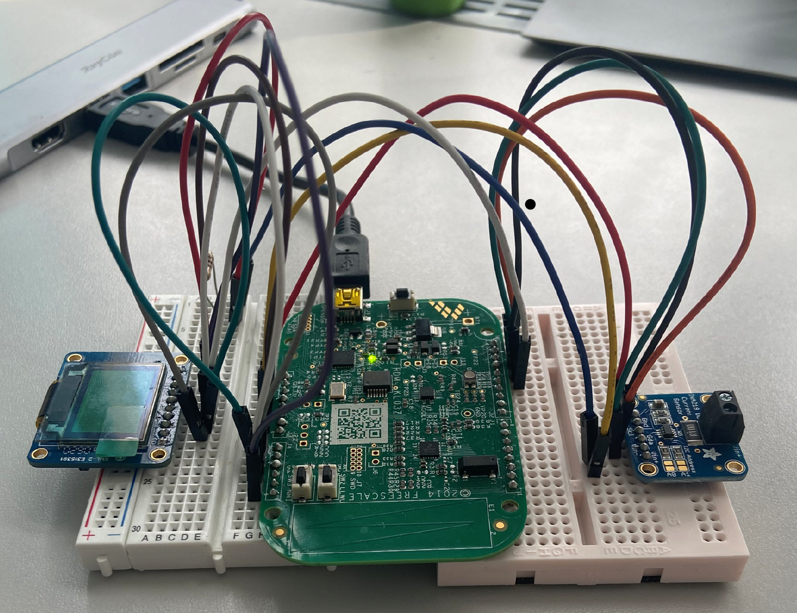
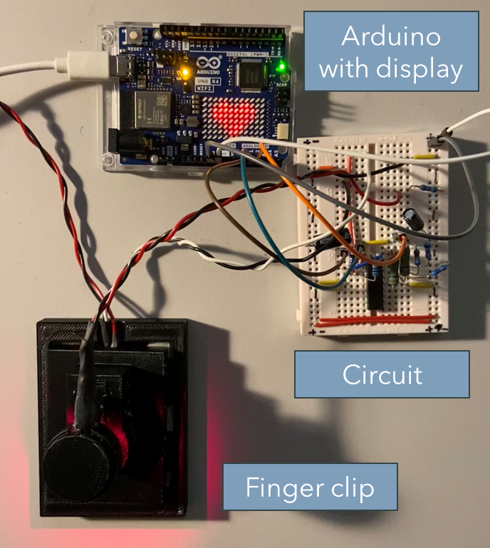
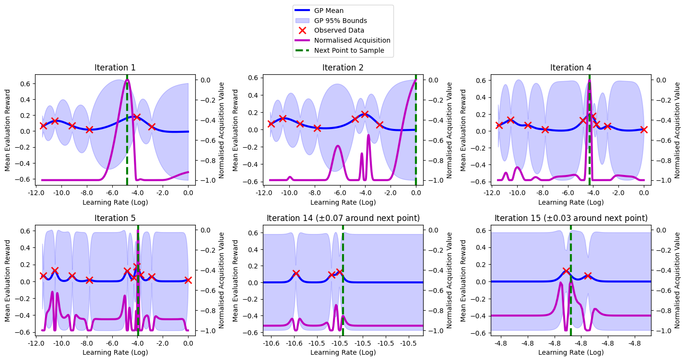
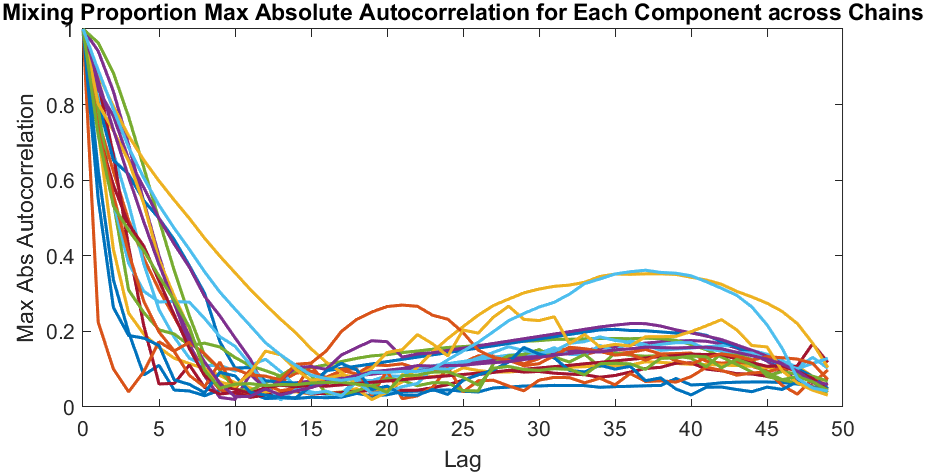

Fast Geospatial Data Processing
using Data Compression
MRes thesis on beating main-memory bandwidths for geospatial computation via cache-optimised in-memory data compression. Implemented in C++ with AVX512.
C++  Python
Python  SLURM
SLURM  GDAL
GDAL 

Developed in C on a FRDM KL03 micro-controller with an MMA8451Q accelerometer, optimising for space by stripping excess boot code and implementing real-time parameter updates.
My algorithm successfully differentiated between walking, jogging, and running based on stride duration probabilities, though it needs tuning to better distinguish jogging and running.
Utilised Gaussian distributions for stride timing with dynamic variance updates via Welford's algorithm and efficient CDF calculations using the Abramowitz and Stegun approximation.
Embedded Real-Time Activity Recognition
Embedded Systems for the Internet of Things coursework. Implemented an algorithm in C on a lightweight micro-controller and IMU to quantify the probability of walking activities.
C 

Employed Arduino for real-time processing in C and data analysis in Python, using thermistors and photoplethysmography (PPG) for enhanced sensor functionality.
Achieved a 43.2% increase in temperature measurement accuracy through calibration of thermistors.
Implemented a custom real-time heart rate detection algorithm using peak-finding techniques to provide immediate user feedback.
Temperature and Pulse Sensors
Sensor Design Project. Implemented and calibrated a temperature and pulse sensor. Raw electronics implemented on an Arduino, real-time signal processing in C, data analysis in Python.
C Arduino  Python
Python

Automatically tuned the hyperparameters for Proximal Policy Optimization (PPO) for the Cartpole problem using Bayesian Optimisation, demonstrating more efficient convergence over random search.
Developed in Python using Gymnasium for simulation, Stable Baselines3 for PPO, and GPyOpt for Bayesian Optimisation, focusing on critical hyperparameters like the learning rate and entropy coefficient.
Employed Gaussian Process surrogates with Matern52 and periodic kernels, achieving optimal performance through the Expected Improvement acquisition function.
Varied neural network architectures to measure the importance of PPO's actor and critic.
Bayesian Optimisation for PPO
Machine Learning and the Physical World coursework. Led a group project using Python to automatically tune PPO's hyperparameters using Bayesian Optimisation.
Python

Understood and implemented advanced statistical algorithms in MATLAB.
Evaluated convergence of the collapsed Gibbs sampler and LDA models.
Achieved a grade A- for both courseworks.
Probabilistic Ranking & Latent Dirichlet Allocation Model
Probabilistic Machine Learning courseworks. One on TrueSkill / probabilistic ranking, the other on topic modelling / the LDA model.